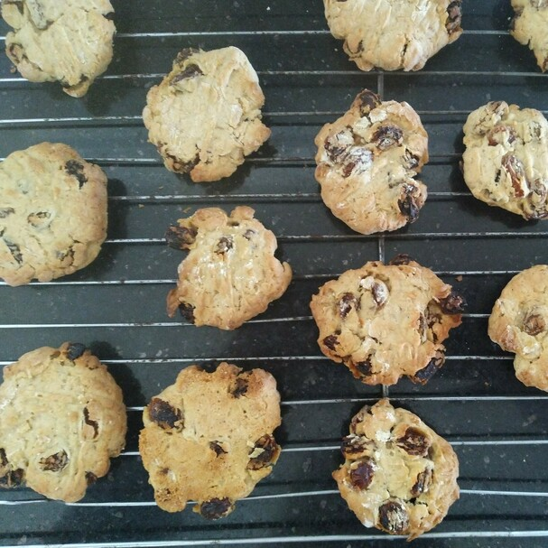

Oat & Sultana Biscuits

- 1 cup plain flour
- 1/2 tsp cinnamon
- 1/2 baking soda
- 1/4 tsp salt
- 1/2 cup margarine
- 1/2 cup brown sugar
- 1/4 white sugar
- 1 egg
- 1 tsp vanilla extract
- 1 cup rolled oats
- 1 cup of sultanas
Beat butter and sugar until smooth
Beat in egg, cinnamon, vanilla until fluffy
Slowly add in flour, baking soda, salt, oats and sultanas
Cover dough with cling wrap and place in fridge for 30 mins
Preheat oven to 180 degrees
Using spoon scoop out dough, roll into balls and place on tray. Flatten with fork.
Bake for 10-15 mins
Place on wire rack to cool